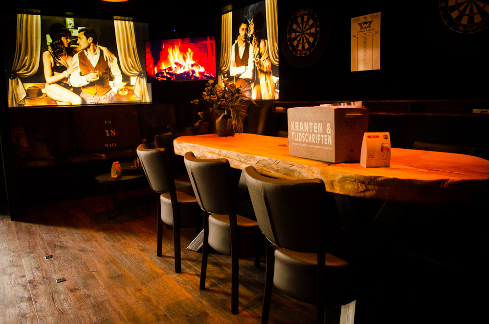
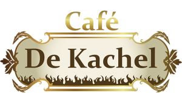
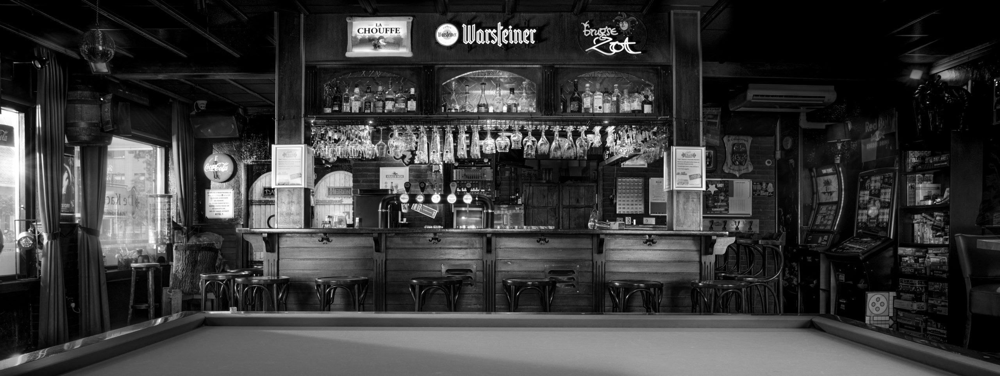
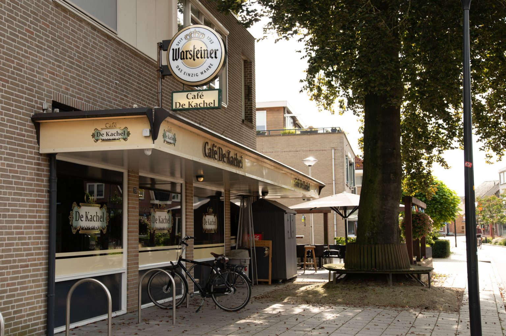
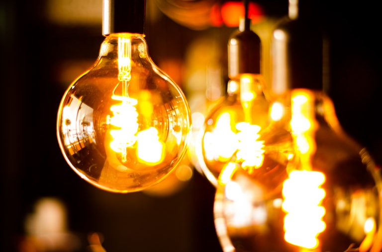
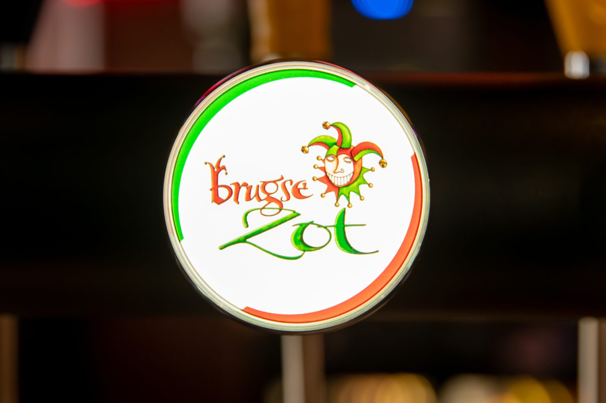
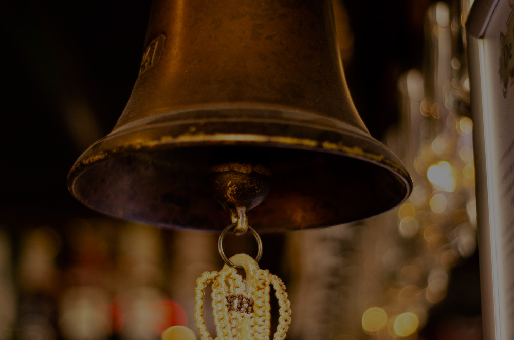
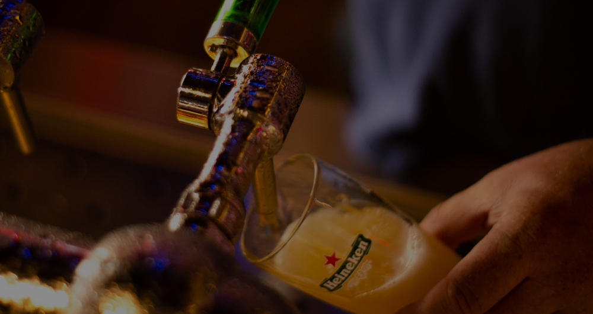
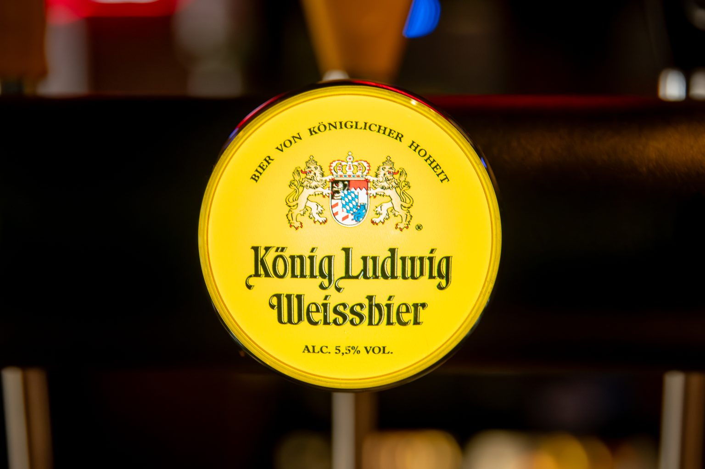
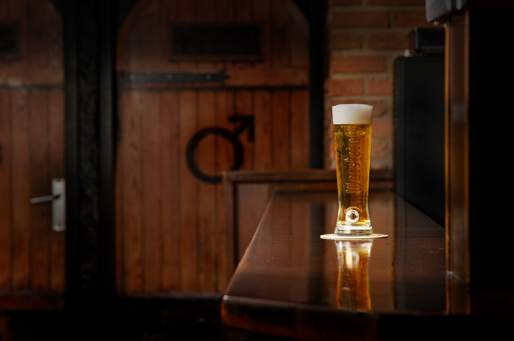

Waar de kachel altijd brandt.
Elke dag open. We willen graag het verlengde van je huiskamer zijn, en die doe je ook niet op slot, toch?
Rijssensestraat 73, Nijverdal
Thuis bij De Kachel
Een wedstrijd kijken, een potje darten of gewoon urenlang kletsen aan de bar. Zodra je gaat zitten, ervaar je de warmte die De Kachel je geeft.

Sport op het grote scherm
Sport, evenementen en andere spraakmakende programma's bekijk je op een van de tv's of op het grote scherm, geprojecteerd in Full HD met ruim 5000 ANSI lumen. Elk scherm kan een andere zender laten zien via ons matrixsysteem: de belangrijkste wedstrijd volgen en met een scheef oog de concurrentie of de Engelse competitie in de gaten houden, het kan allemaal.
Formule 1? Elke race zie je bij ons op het grote scherm, ook de vroege ochtendraces. Dan staat er een gratis ontbijt voor je klaar.
-
Biljart
Een fijne biljarttafel voor een partijtje tussendoor.
-
Darten
Drie professionele dartbanen met uitgekiende verlichting, whiteboard en elektrisch scorebord.
-
Spijker Sla Hoek
Daag je vrienden uit in de unieke Spijker Sla Hoek van De Kachel.
-
Stamtafel
Geen sportfan? Aan de stamtafel liggen gezelschapsspellen, speelkaarten en dobbelstenen klaar.

Terras op het zuiden
Ons terras op het zuiden is opgebouwd uit hout en warme kleuren. In de zon, met een koud biertje van de tap.
Clubgevoel
De Kachel heeft een eigen biljartvereniging, met zes teams in de competitie van de BBOG. Op onze dartbanen spelen drie teams in de competitie.
Ook buiten het café delen we onze warmte. Niet met te veel gekkigheid en poespas, maar gericht op enkele teams om onze lokale binding te onderstrepen.
We steunen voetbalverenigingen De Zweef en SVVN, zijn trotse teamsponsor van het tweede elftal van DES, en zijn verbonden aan korfbalclub NKC '51, gymnastiekvereniging Fysion en TOON Autosport.
De kaart
Van een vers getapte Heineken tot een speciaalbier, een gin-tonic of een bittergarnituur bij de wedstrijd.
Pils & lagers
- Heineken van de tap, 0,20
- Heineken van de tap, 0,25 (standaard)
- Heineken van de tap, 0,50
- Grolsch fles
- Birra Moretti
- Amstel Bright
- Corona
- Desperados
Alcoholvrij en alcoholarm
- Amstel Radler
- Amstel Radler 0.0
- Desperados 0.0
- Liefmans 0.0
Fris
- Cola
- Cola Zero
- Fanta
- Cassis
- Spa rood
- Spa blauw
- Ice tea
Koffie
- Espresso
- Koffie
- Cappuccino
- Extra: slagroom of likeur
Whisky
- Lagavulin
- Talisker
- Johnnie Walker Red en Black, en vele andere
Overige dranken
- Tequila
- Havana Club
- Het hele wodka-assortiment van Absolut: 15 smaken, vraag ernaar
- Ketel 1 jenever
Speciaalbier vanaf € 3,-
Affligem Blond
Bovengistend abdijbier van 6,8%, blond en smaakvol.
Affligem Belgisch Wit
Fris en fruitig witbier met sinaasappelschil en koriander. Een echte dorstlesser.
Affligem Tripel
Licht amberkleurig, met veel fruit zoals banaan, abrikoos en perzik, en een genuanceerde bitterheid.
Tripel Karmeliet
Brouwerij Bosteels. Gebrouwen van gerst, tarwe en haver volgens een recept uit 1679, vol verfijnde fruitige aroma's.
Brand I.P.A.
Citrusachtig fruitig aroma, hoppig met een zachte bitterheid.
Brouwerij 't IJ, IJwit
Verfrissend witbier met koriander en citroen.
Brouwerij 't IJ, Vrij Wit
Alcoholarm witbier, gebrouwen met citroen en korianderzaad.
Duvel
Sterk blond. Een echte klassieker met volle witte schuimkraag.
Eeuwige Jeugd, Lellebel
Fris en fruitig blond, met tonen van citrus en tropisch fruit.
Eeuwige Jeugd, Gladjanus
White IPA: grapefruit, lychee en meloen, ongefilterd.
Jopen, Blurred Lines
New England IPA, troebel en juicy: citrus, passievrucht, perzik, ananas en mango.
La Chouffe
Sterk blond van 8%, ongefilterd, gekruid met koriander.
Oedipus, Mannenliefde
Frisse saison met Szechuanpeper, citroengras en Sorachi Ace-hop.
Uiltje, Ff lekker met je bek in het zonnetje
Session IPA: laag in alcohol, vol van smaak, stevige bitterheid.
Uiltje, Track Down
Verfrissende pale ale vol fruitige hoparoma's, medium bitter.
Likeuren
De Kachel heeft een breed scala aan likeuren. Vraag aan de bar wat er staat.
Gin-tonic
De lekkerste gin-tonics, met als basis London Gin of Hendrick's. Naast de standaard tonic kies je uit verschillende smaken Bliss Tonic.
Cocktails
De heerlijkste cocktails op basis van een van onze 15 smaken Absolut wodka of Havana Club rum.
Hapjes
- Bittergarnituur klein, 12 stuks6,50
- Bittergarnituur groot, 24 stuks12,00
- Ambachtelijke bitterballen, 12 stuks6,50
- Ambachtelijke bitterballen, 24 stuks12,00
- Vlammetjes of kaastengels, 12 stuks9,00
- Vlammetjes of kaastengels, 24 stuks17,50
- Kachel garnituur, 24 warm en 24 koud17,50
- Kachels knabbelplank: klein warm, klein koud, olijven, komkommer, cherrytomaatjes en een bakje chips14,50
- Portie kaas klein3,50
- Halve droge worst3,00
- Worst en kaas klein6,50
- Worst, kaas en scenario groot12,00
Kachels keuken
- Gehaktbal3,40
- Tosti2,50
- Vlamtosti3,00
- Bord patat3,00
- Frikandel2,50
- Kroket2,50
- Broodje hamburger3,50
- Broodje kipburger met saus uit eigen keuken4,00






Waardebonnen
Iemand een avondje De Kachel cadeau doen? We hebben waardebonnen voor elk willekeurig bedrag. Loop even binnen of stuur ons een bericht.
Vraag een waardebon aanOm alvast in je agenda te zetten
Foute Kerst Top 2000 Muziekbingo op derde Kerstdag. Volg ons op Facebook voor het laatste nieuws.
Openingstijden
| Maandag t/m donderdag | vanaf 14.00 uur |
|---|---|
| Vrijdag, zaterdag en zondag | vanaf 11.00 uur |
Contact
Rijssensestraat 737442 MR Nijverdal